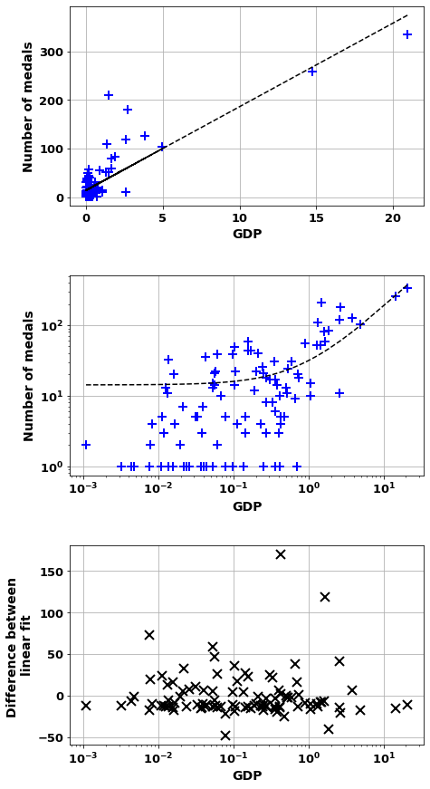
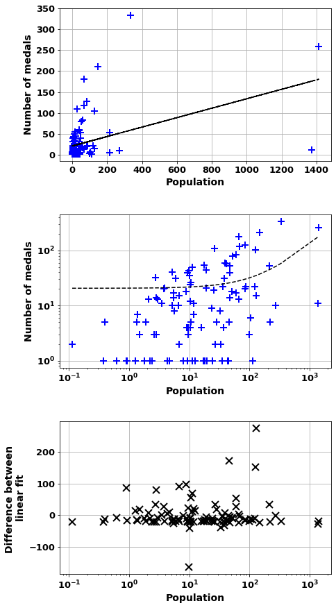
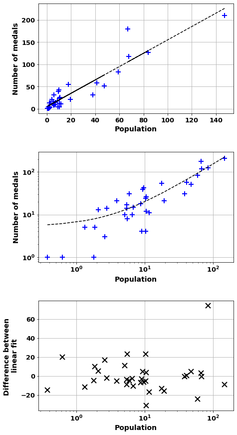
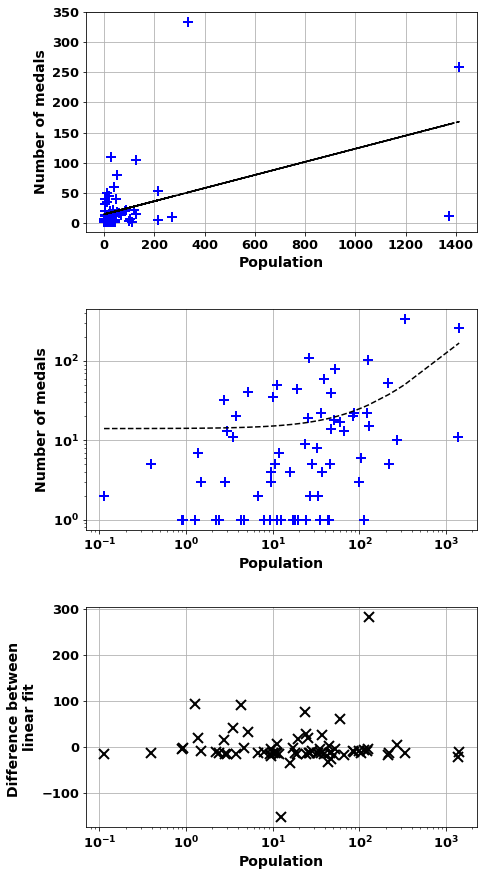
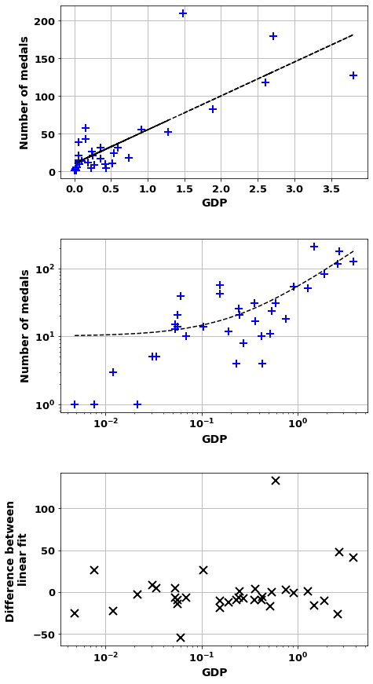
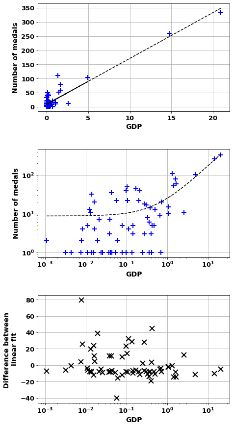
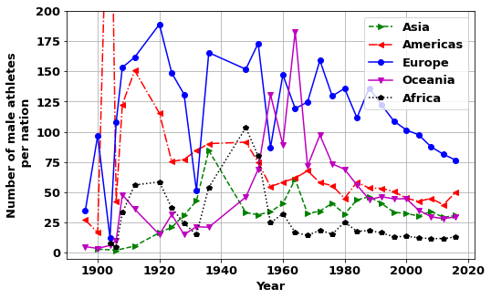
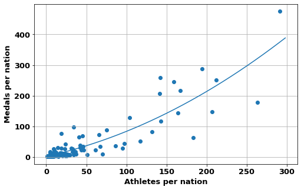
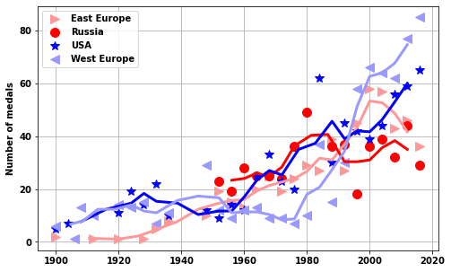
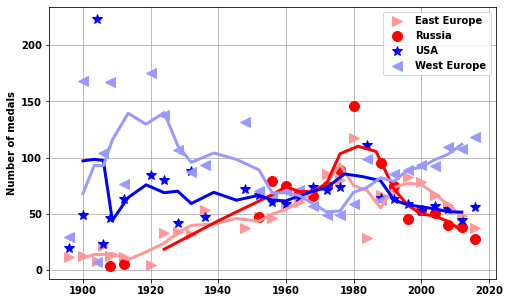

import pandas as pd
import matplotlib.pyplot as plt
from pandasql import sqldf
import copy
import numpy as np
import scipy.stats
Olympics data with SQL and pandas- GDP and population
What is the effect of GDP and population on medals
- toc: true
- badges: true
- categories: [SQL, Pandas, python, Olympics]

Introduction
Due to the global importance of the Olympics, in 2020 there was a broadcast audience of more than 3 billion, I was interested to explore whether countries with the most medals will reflect global politics. And to see if the countries with most influence get more medals.
There are two relatively easy to obtain metrics that can be used to define the importance of a nation internationally, GDP and population.
Gross domestic product (GDP) is a monetary measure of the market value of all the final goods and services produced in a specific time period by countries. GDP is often used as a metric for international comparisons as well as a broad measure of economic progress. It is often considered to be the “world’s most powerful statistical indicator of national development and progress”. GDP Wikipedia.
The population of a country is an important parameter in assessing the global importance of a nation. Furthermore, the more people in a country the greater the pool of potential athletes.
In the final part of this page I will briefly look at how the Cold War was reflected in the Olympics data.
Pre-analysis
Get medals won by country and year
What we want to end up with is a new table with- - Nation - Number of medals - Event or year of the event - Then the details of nations we’re studying: - GDP - Population - Continent
To get a unique medal count for this, we can do a count by grouping on - Nation and Year But also on: - Medal type (Gold, Silver, Bronze) - Event id As we only know if a medal is unique for an athlete if the same medal type does not exist for another athlete in the same event at the same games (year). This is to avoid duplication for team sports. If it is a mixed event then we would need to do the grouping on data of male and female athletes.
From inside out
- Use
UNIONto join the males and female summer athletes- Get NOC, medal types, year, event_id
- Use
GROUP BYto get unique medals andCOUNT - Use
GROUP BYto get medals for countries in each event/year,SUMso we are adding up events
df_F_S =pd.read_csv('data/athlete_F_S')
# df_F_W=pd.read_csv('data/athlete_F_W')
df_M_S=pd.read_csv('data/athlete_M_S')
# df_M_W=pd.read_csv('data/athlete_M_W')
df_all_athletes= pd.read_csv('data/all_athletes')
df_country= pd.read_csv('data/country')
df_event= pd.read_csv('data/event')
# df_games= pd.read_csv('data/games')
# df_population= pd.read_csv('data/population')
df_country = df_country.groupby('NOC').max()
df_country.head(10)| Unnamed: 0 | Nation | Continent | Population | GDP | |
|---|---|---|---|---|---|
| NOC | |||||
| AFG | 0 | Afghanistan | Asia | 32890171 | 19807 |
| ALB | 1 | Albania | Europe | 2829741 | 14800 |
| ALG | 2 | Algeria | Africa | 45400000 | 145164 |
| AND | 3 | Andorra | Europe | 79535 | 3155 |
| ANG | 4 | Angola | Africa | 33086278 | 62307 |
| ANT | 5 | Antigua | Americas | 99337 | 1415 |
| ANZ | 7 | Australia | Oceania | 25921518 | 1330901 |
| ARG | 8 | Argentina | Americas | 47327407 | 383067 |
| ARM | 9 | Armenia | Asia | 2963900 | 12645 |
| AUT | 10 | Austria | Europe | 9027999 | 428965 |
df_by_year=\
sqldf('SELECT \
NOC, \
Year, \
SUM(counta) AS num_medals \
FROM(SELECT \
NOC, \
Year, \
event_id, \
Medal_Bronze, Medal_Gold, Medal_Silver, \
COUNT(*) as counta \
FROM(SELECT \
NOC, \
Year, \
event_id, \
Medal_Bronze, Medal_Gold, Medal_Silver \
FROM \
df_F_S \
WHERE Medal_Bronze=1 OR Medal_Gold=1 OR Medal_Silver \
UNION \
SELECT \
NOC, \
Year, \
event_id, \
Medal_Bronze, Medal_Gold, Medal_Silver \
FROM \
df_M_S \
WHERE Medal_Bronze=1 OR Medal_Gold=1 OR Medal_Silver) as MF \
GROUP BY \
NOC, Year, event_id, Medal_Bronze, Medal_Gold, Medal_Silver\
ORDER BY \
NOC) as inner \
GROUP BY \
NOC, Year;',locals())
df_by_year[df_by_year.Year==2016].sort_values('num_medals',ascending=False).head(10)| NOC | Year | num_medals | |
|---|---|---|---|
| 1246 | USA | 2016 | 121 |
| 246 | CHN | 2016 | 70 |
| 527 | GBR | 2016 | 67 |
| 415 | EUN | 2016 | 56 |
| 471 | FRA | 2016 | 42 |
| 497 | FRG | 2016 | 42 |
| 706 | JPN | 2016 | 41 |
| 38 | ANZ | 2016 | 29 |
| 669 | ITA | 2016 | 28 |
| 230 | CAN | 2016 | 22 |
Join with the country table
Now just join to the country table
df_=\
sqldf('SELECT \
NOC, \
Nation, \
Continent, \
SUM(num_medals) AS number_of_medals, \
Population, \
GDP \
FROM( \
SELECT * \
FROM \
df_country AS c \
INNER JOIN \
df_by_year AS d \
ON \
c.NOC=d.NOC \
WHERE \
d.Year>=2008) \
GROUP BY \
NOC,Continent \
ORDER BY \
num_medals desc;',locals())
df_ | NOC | Nation | Continent | number_of_medals | Population | GDP | |
|---|---|---|---|---|---|---|
| 0 | USA | USA | Americas | 334 | 332906919 | 20936600 |
| 1 | CHN | China | Asia | 259 | 1412600000 | 14722731 |
| 2 | EUN | Russia | Europe | 210 | 147190000 | 1483498 |
| 3 | GBR | UK | Europe | 180 | 67081234 | 2707744 |
| 4 | ANZ | Australia | Oceania | 110 | 25921518 | 1330901 |
| ... | ... | ... | ... | ... | ... | ... |
| 99 | TUN | Tunisia | Africa | 7 | 11746695 | 39236 |
| 100 | UAE | United Arab Emirates | Asia | 1 | 9282410 | 421142 |
| 101 | UGA | Uganda | Africa | 1 | 42885900 | 37372 |
| 102 | VEN | Venezuela | Americas | 5 | 28705000 | 482359 |
| 103 | VIE | Vietnam | Asia | 3 | 98505400 | 271158 |
104 rows × 6 columns
Correlation in Population and GDP
First create a function to display correlations: - produce scatter plots - find which countries are poor correlation - find some correlation stats
def modname(string):
string=''.join([string[0].upper(),string[1:].lower()])
string=string.replace('_',' ')
return string
def doFigAddOns(nomX,nomY,fontsize):
plt.ylabel(modname(nomY), fontsize=fontsize)
plt.xlabel(nomX, fontsize=fontsize)
plt.grid(True)
def scatter_combo(df_temp,xval,yval):
df_temp=df_temp.set_index('Nation')
fontsize=14
df_temp=copy.copy(df_temp)
# remove 0 values
df_temp=df_temp[df_temp.loc[:,xval]!=0]
# drop NaNs
df_temp=df_temp.dropna()
# values in millions
df_temp.loc[:,xval]=df_temp.loc[:,xval]/1e6
# the names of the columns
nomX=xval#(df_temp.columns[xval])
nomY=yval#modname(df_temp.columns[yval])
# define the x and y values
X=df_temp.loc[:,xval]
Y=df_temp.loc[:,yval]
# do some plots
fig,ax=plt.subplots(figsize=(7,15))
plt.rcParams['font.size'] = '13'
# Fig A
ax1=plt.subplot(3,1,1)
ax1.plot(X ,Y,'+b',markeredgewidth=2,ms=10)
m,b=np.polyfit(X,Y,1)
Ypred=X*m+b
plt.plot(X,Ypred, '--k');
doFigAddOns(nomX,nomY,fontsize)
# Fig B
ax3=plt.subplot(3,1,2)
ax3.plot(X ,Y,'+b',markeredgewidth=2,ms=10)
X=X.sort_values()
Ypred=X*m+b
plt.plot(X,Ypred, '--k');
plt.yscale('log')
plt.xscale('log')
doFigAddOns(nomX,nomY,fontsize)
# Fig C
diffa = df_temp.loc[:,yval]-Ypred
ax2=plt.subplot(3,1,3)
ax2.plot(X,diffa, 'xk',markeredgewidth=2,ms=10);
plt.xscale('log')
doFigAddOns(nomX,'Difference between \nlinear fit',fontsize)
plt.subplots_adjust(hspace=0.35)
# because sorted x, need to get original x back
X=df_temp.loc[:,xval]
# Get some correlation values, and what are worst countries
corr=scipy.stats.pearsonr(X, Y)
print('Correlation of = {:.2f} ({:.0e}) \n \
And m= {:.3f} b={:.1f} '.format(corr[0],corr[1],m,b))
country_hi_corr=(diffa).sort_values(ascending=False).index[0:10]
print('Countries worst correlation where overachive',diffa[country_hi_corr])
country_low_corr=(diffa).sort_values().index[0:10]
print('Countries worst correlation where unachieve',diffa[country_low_corr])
d={'Underachieve':country_low_corr,'Overachieve':country_hi_corr}
return pd.DataFrame(data=d)
def getCorr(df_temp, xval,yval):
df_temp=copy.copy(df_temp)
# remove 0 values
df_temp=df_temp[df_temp.loc[:,xval]!=0]
# drop NaNs
df_temp=df_temp.dropna()
# define the x and y values
X=df_temp.loc[:,xval]
Y=df_temp.loc[:,yval]
# Get some correlation values, and what are worst countries
corr=scipy.stats.pearsonr(X, Y)
print('Pearson Correlation of = {:.2f} ({:.0e})'.format(corr[0],corr[1]))
# Get some correlation values, and what are worst countries
corr=scipy.stats.spearmanr(X, Y)
print('Spearman Correlation of = {:.2f} ({:.0e})'.format(corr[0],corr[1]))popCorr=scatter_combo(df_,'GDP','number_of_medals')
popCorrCorrelation of = 0.84 (4e-29)
And m= 17.195 b=14.2
Countries worst correlation where overachive Nation
Russia 170.270535
UK 119.219670
Australia 72.894435
France 59.020671
Germany 47.334168
Ukraine 41.104002
South Korea 37.742411
Italy 36.341876
Cuba 33.005895
Kazakhstan 26.858922
dtype: float64
Countries worst correlation where unachieve Nation
India -48.322884
USA -40.224834
Saudi Arabia -25.259275
Indonesia -22.420333
United Arab Emirates -20.462293
Philippines -19.436562
Israel -18.132356
Mexico -17.725355
Austria -17.596809
Chile -17.570066
dtype: float64| Underachieve | Overachieve | |
|---|---|---|
| 0 | India | Russia |
| 1 | USA | UK |
| 2 | Saudi Arabia | Australia |
| 3 | Indonesia | France |
| 4 | United Arab Emirates | Germany |
| 5 | Philippines | Ukraine |
| 6 | Israel | South Korea |
| 7 | Mexico | Italy |
| 8 | Austria | Cuba |
| 9 | Chile | Kazakhstan |

GDPCorr=scatter_combo(df_,'Population','number_of_medals')
GDPCorrCorrelation of = 0.42 (7e-06)
And m= 0.113 b=20.6
Countries worst correlation where overachive Nation
USA 275.692534
Russia 172.705692
UK 151.769692
Germany 96.889859
France 89.679993
Australia 86.426756
China 78.529401
Japan 69.159606
Italy 55.694604
South Korea 53.504928
dtype: float64
Countries worst correlation where unachieve Nation
India -165.076115
Indonesia -41.444198
Nigeria -40.164409
Philippines -32.332446
Vietnam -28.785832
Egypt -26.362309
Sudan -24.687085
Uganda -24.492699
Saudi Arabia -23.601957
Cameroon -22.395235
dtype: float64| Underachieve | Overachieve | |
|---|---|---|
| 0 | India | USA |
| 1 | Indonesia | Russia |
| 2 | Nigeria | UK |
| 3 | Philippines | Germany |
| 4 | Vietnam | France |
| 5 | Egypt | Australia |
| 6 | Sudan | China |
| 7 | Uganda | Japan |
| 8 | Saudi Arabia | Italy |
| 9 | Cameroon | South Korea |

scatter_combo(df_[df_['Continent']=='Europe'],'Population','number_of_medals')Correlation of = 0.93 (2e-16)
And m= 1.498 b=5.2
Countries worst correlation where overachive Nation
UK 74.302826
Hungary 23.300286
Netherlands 23.269039
Belarus 19.808781
Denmark 17.002417
France 11.114933
Croatia 9.991807
Czech Republic 5.060035
Slovenia 4.658317
Lithuania 4.630427
dtype: float64
Countries worst correlation where unachieve Nation
Poland -31.142356
Spain -24.255647
Portugal -16.682378
Russia -15.733456
Austria -14.709259
Romania -12.930475
Belgium -11.649525
Italy -10.448382
Greece -8.813758
Ukraine -8.812069
dtype: float64| Underachieve | Overachieve | |
|---|---|---|
| 0 | Poland | UK |
| 1 | Spain | Hungary |
| 2 | Portugal | Netherlands |
| 3 | Russia | Belarus |
| 4 | Austria | Denmark |
| 5 | Romania | France |
| 6 | Belgium | Croatia |
| 7 | Italy | Czech Republic |
| 8 | Greece | Slovenia |
| 9 | Ukraine | Lithuania |

scatter_combo(df_[df_['Continent']!='Europe'],'Population','number_of_medals')Correlation of = 0.49 (2e-05)
And m= 0.109 b=14.0
Countries worst correlation where overachive Nation
USA 283.666410
Australia 93.134297
China 90.957076
Japan 76.277923
South Korea 60.318993
Canada 40.727568
Cuba 33.748715
Kazakhstan 27.859642
New Zealand 25.400672
Azerbaijan 19.852149
dtype: float64
Countries worst correlation where unachieve Nation
India -152.808654
Indonesia -33.720543
Nigeria -32.669700
Philippines -25.269105
Vietnam -21.778878
Egypt -19.334337
Sudan -17.902477
Uganda -17.715178
Saudi Arabia -16.856911
Cameroon -15.694183
dtype: float64| Underachieve | Overachieve | |
|---|---|---|
| 0 | India | USA |
| 1 | Indonesia | Australia |
| 2 | Nigeria | China |
| 3 | Philippines | Japan |
| 4 | Vietnam | South Korea |
| 5 | Egypt | Canada |
| 6 | Sudan | Cuba |
| 7 | Uganda | Kazakhstan |
| 8 | Saudi Arabia | New Zealand |
| 9 | Cameroon | Azerbaijan |

scatter_combo(df_[df_['Continent']=='Europe'],'GDP','number_of_medals')Correlation of = 0.80 (6e-09)
And m= 45.027 b=10.1
Countries worst correlation where overachive Nation
Russia 133.114656
UK 47.990590
Ukraine 40.906665
Belarus 26.198814
Hungary 25.932286
Croatia 8.392025
Czech Republic 4.946635
Denmark 4.919196
Netherlands 3.836572
Serbia 2.527421
dtype: float64
Countries worst correlation where unachieve Nation
Germany -54.463232
Switzerland -25.766716
Austria -25.402938
Belgium -22.291826
Ireland -18.937224
Portugal -16.500704
Spain -15.776437
Finland -14.300792
Italy -12.028820
Sweden -10.294891
dtype: float64| Underachieve | Overachieve | |
|---|---|---|
| 0 | Germany | Russia |
| 1 | Switzerland | UK |
| 2 | Austria | Ukraine |
| 3 | Belgium | Belarus |
| 4 | Ireland | Hungary |
| 5 | Portugal | Croatia |
| 6 | Spain | Czech Republic |
| 7 | Finland | Denmark |
| 8 | Italy | Netherlands |
| 9 | Sweden | Serbia |

scatter_combo(df_[df_['Continent']!='Europe'],'GDP','number_of_medals')Correlation of = 0.94 (2e-33)
And m= 16.234 b=8.7
Countries worst correlation where overachive Nation
Australia 79.660038
South Korea 44.796081
Cuba 38.591086
Kazakhstan 32.508245
Kenya 28.660696
New Zealand 27.815933
Azerbaijan 25.573605
Canada 23.586944
Jamaica 23.041050
Brazil 19.812142
dtype: float64
Countries worst correlation where unachieve Nation
India -40.315038
Saudi Arabia -19.100124
Indonesia -15.916697
USA -14.609781
United Arab Emirates -14.571357
Philippines -13.602977
Israel -12.259868
Chile -11.840843
Venezuela -11.565125
Mexico -11.204664
dtype: float64| Underachieve | Overachieve | |
|---|---|---|
| 0 | India | Australia |
| 1 | Saudi Arabia | South Korea |
| 2 | Indonesia | Cuba |
| 3 | USA | Kazakhstan |
| 4 | United Arab Emirates | Kenya |
| 5 | Philippines | New Zealand |
| 6 | Israel | Azerbaijan |
| 7 | Chile | Canada |
| 8 | Venezuela | Jamaica |
| 9 | Mexico | Brazil |

df_GDP=copy.copy(df_[['Nation','Continent','GDP']])
df_GDP = df_GDP.sort_values('GDP',ascending=False)
df_GDP
rich_list = df_GDP.head(52).index
# # index_not_rich=[i for i,country in enumerate(df_.index) if (country not in rich_list) and (df_.iloc[i,2]!='Europe') and (df_.index[i]!='India')]
# # index_rich=[i for i,country in enumerate(df_.index) if ( (df_.iloc[i,2]!='Europe') )]
index_rich=[i for i,country in enumerate(df_.index) if (country in rich_list) ]
index_not_rich=[i for i,country in enumerate(df_.index) if (country not in rich_list) ]
print(' Index Rich- Population')
getCorr(df_.iloc[index_rich,:],'Population','number_of_medals')
print(' Index Not Rich- Population')
getCorr(df_.iloc[index_not_rich,:],'Population','number_of_medals')
print(' Index Rich- GDP')
getCorr(df_.iloc[index_rich,:],'GDP','number_of_medals')
print(' Index Not Rich- GDP')
getCorr(df_.iloc[index_not_rich,:],'GDP','number_of_medals') Index Rich- Population
Pearson Correlation of = 0.37 (6e-03)
Spearman Correlation of = 0.30 (3e-02)
Index Not Rich- Population
Pearson Correlation of = 0.17 (2e-01)
Spearman Correlation of = 0.15 (3e-01)
Index Rich- GDP
Pearson Correlation of = 0.84 (7e-15)
Spearman Correlation of = 0.50 (2e-04)
Index Not Rich- GDP
Pearson Correlation of = 0.32 (2e-02)
Spearman Correlation of = 0.38 (6e-03)print(' Index Europe- GDP')
getCorr(df_[df_['Continent']=='Europe'],'GDP','number_of_medals')
print(' Index Not Europe- GDP')
getCorr(df_[df_['Continent']!='Europe'],'GDP','number_of_medals')
print(' Index Europe- Population')
getCorr(df_[df_['Continent']=='Europe'],'Population','number_of_medals')
print(' Index Not Europe- Population')
getCorr(df_[df_['Continent']!='Europe'],'Population','number_of_medals') Index Europe- GDP
Pearson Correlation of = 0.80 (6e-09)
Spearman Correlation of = 0.71 (1e-06)
Index Not Europe- GDP
Pearson Correlation of = 0.94 (2e-33)
Spearman Correlation of = 0.51 (1e-05)
Index Europe- Population
Pearson Correlation of = 0.93 (2e-16)
Spearman Correlation of = 0.81 (3e-09)
Index Not Europe- Population
Pearson Correlation of = 0.49 (2e-05)
Spearman Correlation of = 0.42 (3e-04)print('GDP'),getCorr(df_,'GDP','number_of_medals')
print('Population'),getCorr(df_,'Population','number_of_medals')GDP
Pearson Correlation of = 0.84 (4e-29)
Spearman Correlation of = 0.60 (2e-11)
Population
Pearson Correlation of = 0.42 (7e-06)
Spearman Correlation of = 0.41 (1e-05)(None, None)Overview of GDP and population
Methods Used
Looking at number of medals against GDP and population, for a period from 2008-2016 inclusive. Using population and GDP data from ~2020. - scatter plots - to visualize the relationships between medals and GDP, and medals and population. Both show a correlation - Pearson & Spearman correlation - To quatify the correlation seen. Pearson looks for a linear relationship whereas Spearman considers the ordering of the variables. The Pearson results showed a moderate to strong relationship for GDP and a weak to moderate relationship for population. The Spearman results were similar (more correlation for GDP) but the correlation values were lower. - I considered looking at the changes with time, but there were a lot of factors affecting country participation and the data was harder to obtain easily
Overview
Results were mainly as expected and hence PROVED.
- GDP
- ALL = strong AND significant
- Europe = strong AND significant
- NOT Europe = very strong AND significant
- Population
- ALL = moderate AND significant
- Europe = very strong AND significant
- NOT Europe = moderate AND significant
Using a line fit of the data (GDP or Population to Medals) gives an indication of which countries are reducing the correlation. If the country has more medals than the fit then it is overachieve and if it has less it is underachieveing. The table below shows which countries are under and overachieveing for GDP and population.
GDPCorr.rename(columns={'Overachieve':'GDP - Overachieve','Underachieve':'GDP - Underachieve'},inplace=True)
popCorr.rename(columns={'Overachieve':'Population - Overachieve','Underachieve':'Population - Underachieve'},inplace=True)
corrComb=pd.concat([GDPCorr,popCorr],axis=1)
corrComb| GDP - Underachieve | GDP - Overachieve | Population - Underachieve | Population - Overachieve | |
|---|---|---|---|---|
| 0 | India | USA | India | Russia |
| 1 | Indonesia | Russia | USA | UK |
| 2 | Nigeria | UK | Saudi Arabia | Australia |
| 3 | Philippines | Germany | Indonesia | France |
| 4 | Vietnam | France | United Arab Emirates | Germany |
| 5 | Egypt | Australia | Philippines | Ukraine |
| 6 | Sudan | China | Israel | South Korea |
| 7 | Uganda | Japan | Mexico | Italy |
| 8 | Saudi Arabia | Italy | Austria | Cuba |
| 9 | Cameroon | South Korea | Chile | Kazakhstan |
So based on the above it may make sense to group countries based on their GDP, into a rich and poor list. But as shown above this doesn’t increase the correlation for either group.
The only useful metric to increase the correlation was to group the countries into those from Europe. This is probably due to the similarity of countries within Europe (and outside): size, GDP but also culturally; and it may be because the European countries have much greater participation at the Olympics (both over currently and historically).
Guide on Correlation
pd.DataFrame({'Correlation':['1','0.8 - 1.0','0.6 - 0.8','0.4 - 0.6','0.2 - 0.4','0 - 0.2'],\
'Interpretation':['Pefect','Strong to Perfect','Moderate to Very Strong','Moderate to strong','Weak to moderate','Zero to weak']})
| Correlation | Interpretation | |
|---|---|---|
| 0 | 1 | Pefect |
| 1 | 0.8 - 1.0 | Strong to Perfect |
| 2 | 0.6 - 0.8 | Moderate to Very Strong |
| 3 | 0.4 - 0.6 | Moderate to strong |
| 4 | 0.2 - 0.4 | Weak to moderate |
| 5 | 0 - 0.2 | Zero to weak |
To determine whether the correlation between variables is significant, compare the p-value to your significance level. Usually, a significance level (denoted as α or alpha) of 0.05 works well. An α of 0.05 (5e-2) indicates that the risk of concluding that a correlation exists—when, actually, no correlation exists—is 5%. The p-value tells you whether the correlation coefficient is significantly different from 0. (A coefficient of 0 indicates that there is no linear relationship.)
- P-value ≤ α (5e-2): The correlation is statistically significant
If the p-value is less than or equal to the significance level, then you can conclude that the correlation is different from 0.
- P-value > α (5e-2): The correlation is not statistically significant
If the p-value is greater than the significance level, then you cannot conclude that the correlation is different from 0.
https://www.ncbi.nlm.nih.gov/pmc/articles/PMC6107969/
https://support.minitab.com/en-us/minitab-express/1/help-and-how-to/modeling-statistics/regression/how-to/correlation/interpret-the-results/
Number of athletes
A metric that would make sense to correlate with medals would be the number of athletes each nation sends to an Olympics. This is because, for the most part, participation is done on merit. That is athletes have to qualify against athletes from other nations.
So the metrics we want to look at are: - the number of athletes per nation attending a particular games - the number of medals per nation per games
NB I will just use male athletes for simplicity
Change in average athletes per continent
First, let us look if the greater number of athletes from Europe is also reflected in the average number of athletes each nation sends within each continent.
As shown below European countries send around twice as many athletes per nation as other continents.
tempa= sqldf('SELECT \
Year, \
Continent, \
AVG(numbers) as ath_per_nation \
FROM(SELECT \
c.Continent, \
a.Year,\
COUNT(*) AS numbers \
FROM \
df_country as c \
LEFT JOIN \
df_M_S as a \
ON \
a.NOC = c.NOC \
GROUP BY \
a.Year,c.Continent,c.Nation \
ORDER BY \
Year asc) A \
GROUP BY \
Year,Continent;',locals())
plt.subplots(figsize=(8,5))
cola=['g>--','<r-.','bo-','mv-','kp:']
for i,continent in enumerate(tempa.Continent.unique()):
x=tempa[tempa.Continent==continent]['Year']
y=tempa[tempa.Continent==continent]['ath_per_nation']
plt.plot(x,y,cola[i]);
plt.legend(tempa.Continent.unique());
plt.ylim([-5,200])
plt.grid(True)
plt.xlabel('Year')
plt.ylabel('Number of male athletes\n per nation');
Athletes per nation VS medals per nation
To look at this correlation we need to do the following steps: - Join athletes with country tables - Group by Nation and whether they have a medal - Count this, this will give number of events with a medal - Then need to remove nations that didn’t get any medals - Get scatter and correlation of these - Group by continent and do the same
tempa= sqldf('SELECT \
Continent, \
Nation, \
Medal, \
SUM(numbers) AS numbers \
FROM(SELECT \
c.Continent, \
c.Nation, \
a.Medal, \
COUNT(*) AS numbers \
FROM \
df_country as c \
LEFT JOIN \
df_M_S as a \
ON \
a.NOC = c.NOC \
WHERE Year>2003 \
GROUP BY \
c.Continent,c.Nation,a.Medal_Gold,a.Medal_Silver,a.Medal_Bronze) A \
GROUP BY \
Continent, Nation,Medal;',locals())
tempa2= sqldf('SELECT \
Nation, \
COUNT(numbers) AS numbers \
FROM(SELECT \
a.athlete_ID, \
c.Nation, \
COUNT(*) AS numbers \
FROM \
df_country as c \
LEFT JOIN \
df_F_S as a \
ON \
a.NOC = c.NOC \
WHERE Year=2016 \
GROUP BY \
c.NOC,a.athlete_ID,a.Year) A \
GROUP BY \
Nation;',locals())
tempa3= tempa[tempa.Medal==1]
tempa4=sqldf('\
SELECT A.Nation,A.numbers as num_medals,B.numbers as num_ath \
FROM tempa3 as A \
LEFT JOIN tempa2 as B \
ON A.Nation=B.Nation \
;',locals())
tempa4| Nation | num_medals | num_ath | |
|---|---|---|---|
| 0 | Algeria | 4 | 10.0 |
| 1 | Botswana | 1 | 3.0 |
| 2 | Egypt | 9 | 37.0 |
| 3 | Eritrea | 1 | 1.0 |
| 4 | Ethiopia | 12 | 20.0 |
| ... | ... | ... | ... |
| 95 | UK | 245 | 159.0 |
| 96 | Ukraine | 51 | 117.0 |
| 97 | Australia | 251 | 212.0 |
| 98 | Fiji | 13 | 17.0 |
| 99 | New Zealand | 44 | 97.0 |
100 rows × 3 columns
tempa4=tempa4.dropna()
x=tempa4.num_ath
y=tempa4.num_medals
plt.subplots(figsize=(8,5))
plt.scatter(x,y)
a=scipy.stats.spearmanr(x,y)
b=scipy.stats.pearsonr(x,y)
print('Spearman correlation = {:.2f} ({:.0e}) \nand Pearson correlation= {:.2f} ({:.0e})'\
.format(a[0],a[1],b[0],b[1]))
plt.grid(True)
plt.xlabel('Athletes per nation')
plt.ylabel('Medals per nation');
p=np.poly1d( np.polyfit(x,y,2) )
xx=np.arange(0,300,2)
yy=p(np.arange(0,300,2))
plt.plot(xx,yy);Spearman correlation = 0.83 (3e-26)
and Pearson correlation= 0.87 (5e-32)
Overview Medals VS Athletes per nation
As was expected there is a good correlation between the number of athletes a nation sends and the number of medals they get
What may also have been expected and shown in the data, is that the relationship is not linear. Instead the more athletes a nation sends the greater the medals/athlete ratio.
i.e. If a nation sends more athletes it is more likely that a higher proportion of them will win medals
Cold War
The Cold War was a period of geopolitical tension between the United States and the Soviet Union and their respective allies, the Western Bloc and the Eastern Bloc, which began following World War II and ended in the early 1990s.
The conflict was based around the ideological and geopolitical struggle for global influence by these two superpowers.
The Soviet Union competed at the Olympics from 1952-1988. The Russian Empire had previously competed at the 1900, 1908 and 1912 Olympics games. In these games the best they ranked was 12th. In contrast the USA competed from the start of the Olympics and all subsequent games. In 1952 they were the most succesful nation, coming 1st in the medals table in 8 out of the previous 11 games (and second in the other 3).
The figures below show how during the Cold War period, The Soviet Union was able to compete with USA and in some cases beat them in the medals table. After this Cold War period the medals obtained by both the USA and the Soviet Union fell with respect to the totals from the European nations. Furthermore, USA reasserted it’s dominance after the Cold War period.
def number_of_athletes_USA_USSR(df_F_S,df_M_S):
testa2=sqldf('\
SELECT \
Year, \
NOCSMALL, \
count(*) AS number_of_athletes, \
"F" AS Sex \
FROM \
(SELECT \
athlete_ID, \
Year, \
CASE \
WHEN NOC IN ("FRA","ESP","ITA","POR","GBR","IRL","NED","BEL","DEN","SUI") THEN "WES"\
WHEN NOC IN ("POL","ROU","UKR","LAT","BUL","HUN","LTU","LAT","BLR","ALB","SVK","AUT","EST","BIH","BOH") THEN "EST"\
WHEN NOC="USA" THEN "USA" \
WHEN NOC="EUN" THEN "EUN" \
ELSE "ROW"\
END AS NOCSMALL \
from df_F_S \
group by athlete_ID,Year \
order by Year asc) A \
GROUP BY Year, NOCSMALL \
UNION ALL \
SELECT \
Year, \
NOCSMALL, \
count(*) AS number_of_athletes, \
"M" AS Sex \
FROM \
(SELECT \
athlete_ID, \
Year, \
CASE \
WHEN NOC IN ("FRA","ESP","ITA","POR","GBR","IRL","NED","BEL","DEN","SUI") THEN "WES"\
WHEN NOC IN ("POL","ROU","UKR","LAT","BUL","HUN","LTU","LAT","BLR","ALB","SVK","AUT","EST","BIH","BOH") THEN "EST"\
WHEN NOC="USA" THEN "USA" \
WHEN NOC="EUN" THEN "EUN" \
ELSE "ROW"\
END AS NOCSMALL \
from df_M_S \
group by athlete_ID,Year \
order by Year asc) A \
GROUP BY Year, NOCSMALL;',locals() )
return testa2
def number_of_medals_USA_USSR(df_F_S,df_M_S):
testa2=sqldf('\
SELECT \
COUNT(*) AS number_of_medals,\
Year, Sex, NOCSMALL\
FROM \
(SELECT NOCSMALL,Year,Sex,COUNT(*) AS counta\
FROM \
(SELECT \
athlete_ID, \
event_ID, \
"F" AS Sex, \
Medal_Gold,Medal_Silver,Medal_Bronze,\
Year, \
CASE \
WHEN NOC IN ("FRA","ESP","ITA","POR","GBR","IRL","NED","BEL","DEN","SUI") THEN "WES"\
WHEN NOC IN ("POL","ROU","UKR","LAT","BUL","HUN","LTU","LAT","BLR","ALB","SVK","AUT","EST","BIH","BOH") THEN "EST"\
WHEN NOC="USA" THEN "USA" \
WHEN NOC="EUN" THEN "EUN" \
ELSE "ROW"\
END AS NOCSMALL \
from df_F_S \
WHERE Medal_Gold=1 OR Medal_Silver=1 OR Medal_Bronze=1\
UNION ALL \
SELECT \
athlete_ID, \
event_ID, \
"M" AS Sex, \
Medal_Gold,Medal_Silver,Medal_Bronze,\
Year, \
CASE \
WHEN NOC IN ("FRA","ESP","ITA","POR","GBR","IRL","NED","BEL","DEN","SUI") THEN "WES"\
WHEN NOC IN ("POL","ROU","UKR","LAT","BUL","HUN","LTU","LAT","BLR","ALB","SVK","AUT","EST","BIH","BOH") THEN "EST"\
WHEN NOC="USA" THEN "USA" \
WHEN NOC="EUN" THEN "EUN" \
ELSE "ROW"\
END AS NOCSMALL \
from df_M_S \
WHERE Medal_Gold=1 OR Medal_Silver=1 OR Medal_Bronze=1\
order by Year asc) A\
GROUP BY \
Year, NOCSMALL,event_id,Medal_Gold,Medal_Silver,Medal_Bronze) AS B\
GROUP BY Year, NOCSMALL, Sex\
;',locals() )
return testa2
USA_USSR_medals=number_of_medals_USA_USSR(df_F_S,df_M_S)
USA_USSR_athletes=number_of_athletes_USA_USSR(df_F_S,df_M_S)def yrplot(df__,whatplot= 'avg_weight'):
countries=['EST', 'EUN' ,'ROW', 'USA' ,'WES']
# df__.NOCSMALL.unique()
# countries=np.sort(countries)
print(countries)
cola=['>','o','+','*','<']
colur=[[1,0.6,.6],[1,0,0],[.5,.5,.5],[0,0,1],[.6,.6,1]]
# ['EST' 'EUN' 'ROW' 'USA' 'WES']
# 'EST','USA','WES','ROW','EUN'
fig,ax1=plt.subplots(figsize=(8,5))
for i,country in enumerate(countries):
if country!='ROW':
ax1.plot(df__[df__.NOCSMALL==country].Year,\
df__[df__.NOCSMALL==country][whatplot],\
marker=cola[i],linestyle='None',color=colur[i]\
,markersize=10)
def doPlot(df_F,avgNo,whatplot,country,col,lw,ax1):
bb = df_F[df__.NOCSMALL==country].Year.rolling(avgNo).mean()
cc = df_F[df__.NOCSMALL==country][whatplot]
cc = cc.rolling(avgNo).mean()
ax1.plot(bb,cc,linewidth=lw,color=col)
return ax1
for i,country in enumerate(countries):
if country!='ROW':
ax1=doPlot(df__,avgNo=3,whatplot=whatplot,country=country,col=colur[i],lw=3,ax1=ax1)
lega = ['East Europe','Russia','USA','West Europe']
plt.legend(lega)
plt.grid(True)
plt.ylabel(modname(whatplot))
return ax1yrplot(USA_USSR_medals[USA_USSR_medals.Sex=='F'],whatplot= 'number_of_medals')
yrplot(USA_USSR_medals[USA_USSR_medals.Sex=='M'],whatplot= 'number_of_medals')